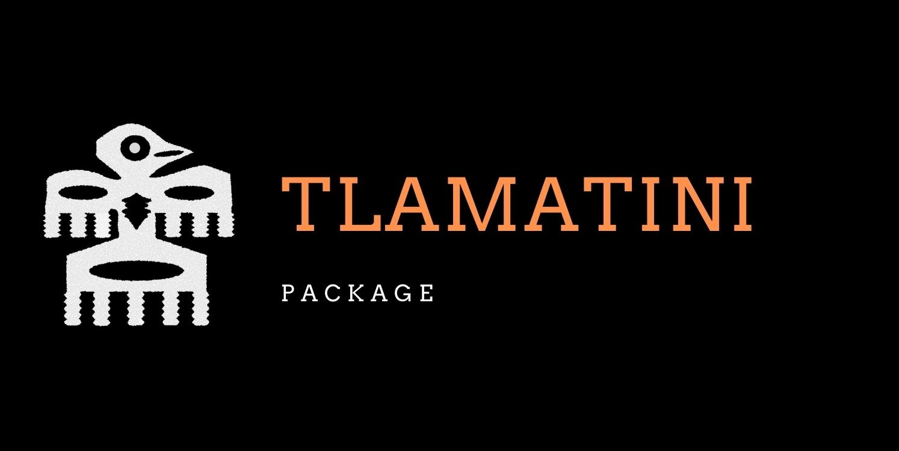

tlamatini
Funciones útiles para el análisis de datos biológicos y ecológicos en español.

¿Qué es Tlamatini?
El paquete está actualmente en etapa de desarrollo. Algunas funciones pueden contener errores o cambiar en el futuro.
Tlamatini es un paquete de R que reúne funciones útiles para el análisis de datos, principalmente enfocadas en modelos lineales (LM, GLM, GLMM, GAM). Aunque está pensado para Ciencias Biológicas, su aplicación se extiende a cualquier área del conocimiento que requiera análisis estadísticos.
El paquete incluye transformaciones de datos, ajuste y revisión de modelos lineales, exportación de tablas, gráficos listos para publicación, diagnósticos de modelos, y herramientas de limpieza y manejo de datos.
Tlamatini surge de la necesidad de disponer de herramientas estadísticas en idioma español, y pretende proveer una herramienta accesible a las personas hablantes de lengua hispana.
El nombre proviene del náhuatl Tlamatini (“los que saben algo”). Traducido como hombres sabios, era el equivalente a los filósofos en la época de los Mexicas.
Instalación
Puedes instalar la versión de desarrollo desde GitHub:
Sys.setenv(R_REMOTES_NO_ERRORS_FROM_WARNINGS = "true")
if (!require("remotes")) install.packages("remotes")
remotes::install_github("mariosandovalmx/tlamatini")
library(tlamatini)Ejemplo rápido
Aquí va un ejemplo del flujo de trabajo típico con tlamatini para ajustar y revisar
un modelo lineal:
library(tlamatini)
# Explorar el dataframe
numSummary(iris)
charSummary(iris)
# Limpiar y preparar datos
datos <- limpiar_nombres(iris)
datos <- as_factorALL(datos)
datos <- escalar_datos(datos)
# Revisar normalidad por grupos
norm.shapiro.grupos(datos, var = "sepal_length", grupo = "species")
# Ajustar un modelo y revisar diagnóstico
modelo <- lm(sepal_length ~ species + petal_width, data = datos)
resid_DHARMa(modelo)
outliers.plot(modelo)
VIF_plot(modelo)
# Exportar resultados a tablas
table_ANOVA3(modelo)
table_means(modelo)
table_contrasts(modelo)
# Visualizar efectos
plot_effects(modelo)
boxplot_emmeans(modelo)Categorías de funciones
tlamatini ofrece más de 60 funciones organizadas por categoría:
| Categoría | Ejemplos |
|---|---|
| Exploración y resumen | numSummary(), charSummary(),
ggpairs_dfnum() |
| Limpieza y manejo de datos | limpiar_nombres(), as_factorALL(),
escalar_datos() |
| Valores faltantes | NA.cero(), NA.quitar(),
vacio.as.NA() |
| Transformaciones | trans.logit(), trans.arcsine(),
trans.01.beta() |
| Normalidad y outliers | norm.shapiro.grupos(), outliers.plot() |
| Diagnóstico de modelos | resid_DHARMa(), VIF_plot(),
dispfun() |
| Tablas de resultados | table_ANOVA3(), table_means(),
table_contrasts() |
| Visualización | plot_effects(), boxplot_emmeans(),
tema_articulo() |
Viñetas y tutoriales
Sitio web del paquete: mariosandovalmx.github.io/tlamatini-website
Cómo citar
Si usas tlamatini en tu investigación, por favor cítalo:
Sandoval-Molina, M. A. (2023). tlamatini: Funciones útiles para el análisis de datos Biológicos/Ecológicos en Español (v0.5) [R package]. Zenodo. https://doi.org/10.5281/zenodo.7765347
@software{sandoval_tlamatini_2023,
author = {Sandoval-Molina, Mario A.},
title = {tlamatini: Funciones útiles para el análisis de datos
Biológicos/Ecológicos en Español},
year = {2023},
version = {0.5},
doi = {10.5281/zenodo.7765347},
url = {https://github.com/mariosandovalmx/tlamatini}
}Este proyecto está licenciado bajo la Licencia MIT.